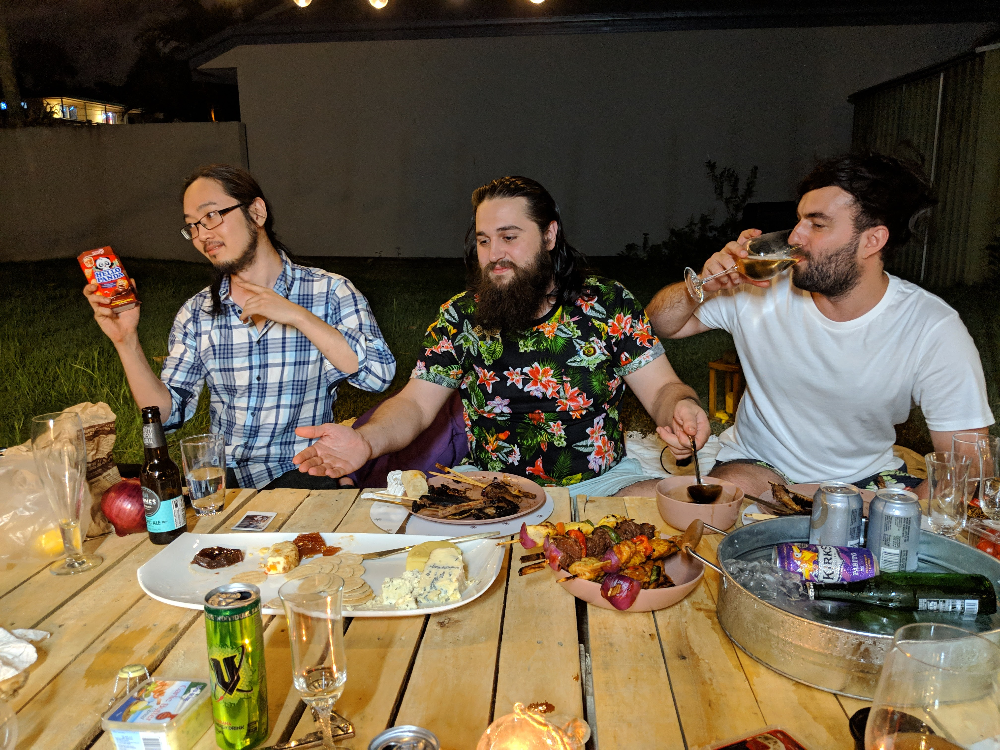
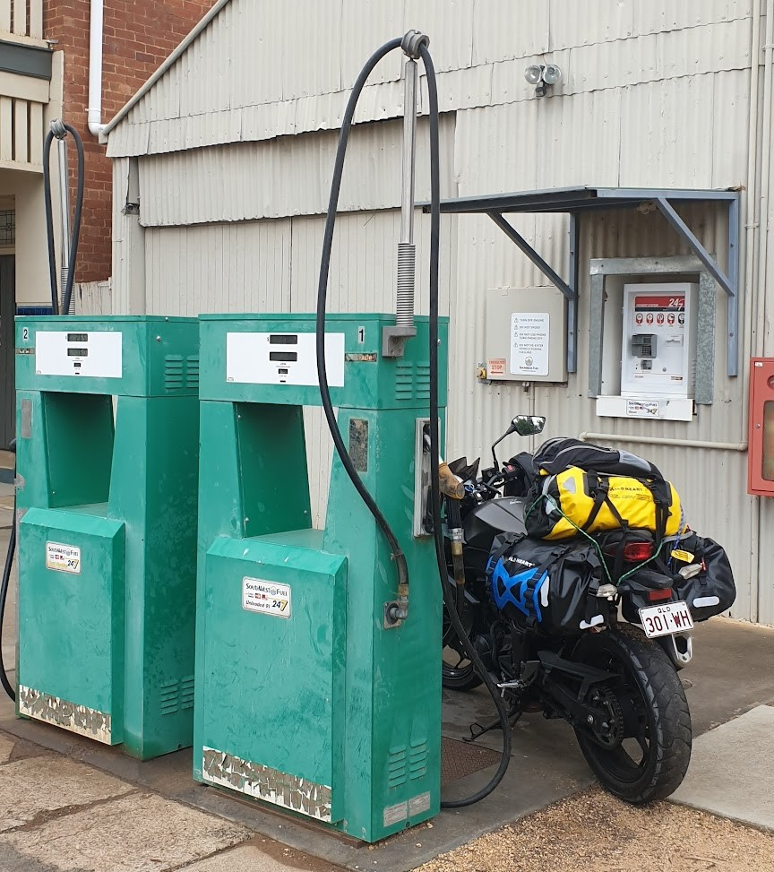

Who am I?
About me

About me
Hi! My name is David Oorloff and if you missed the splash page of this website, I am an aspiring web developer.
I am dependable, hard working and always ready to put in the long hours and elbow grease, sometimes I'll over grease when I should have asked for help though.
My current goal is to always be better than I was yesterday, wether that means lifting 1 more kilo at thhe gym or knowing one more function of what I'm learning.
Hobbies

Hobbies
I love playing games both board and computer.
My favourite video games are DOTA2 and Civilization VI
I am a beer enthusiest and always like to try new and different foods.
A relaxing and fun time for me is going for a ride and I also enjoy reading manga.